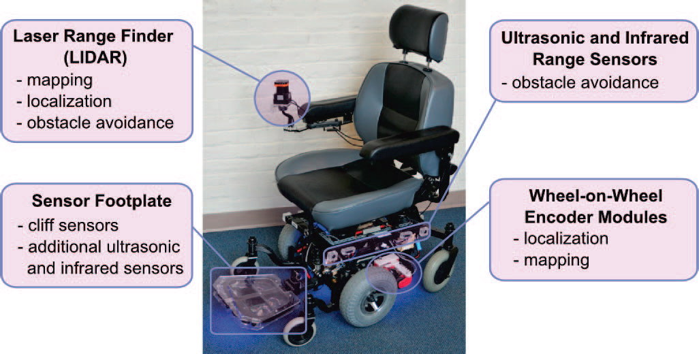

Introduction
I developed a user habit learning and activity perdicting algorithm using clustering and Baysian Network for my Master's Thesis in WPI at 2015 adviced by Professor Taskin Padir. The algorithm can predict the destination the user want to visit based on the user's past activity such as the time when the user entered the building, when the user visited the office and the time of the day.
This algorithm can assist people like stephen hawking who can only do very low bandwidth communication to machines. We can find optimal coding scheme based on the Information Theory when we have the probability of each options. In my experiment, the destinations was ranked based on the algorithm's output. Selecting destiantion with higer rank requires the user doing less activity than the selecting destinations with lower rank.
The algorithm ran on the wheelchair platform shown below built by Dmitry Sinyukov who was a PhD student in WPI.
Simultaneous localization and mapping(SLAM) algorithm from Robotic Operation System(ROS) was used to calculate the realtime location of the wheelchair based on the readings from LIDAR. Then I used Density-based spatial clustering of applications with noise (DBSCAN) algorithm to find several locations the user visited frequently from the user location history. Having all the locations, Baysian Network was trained from the time series data of when the user visited each location. Then, the user's future location can be perdicted by the Baysian Network based on the past location the user have visited.